ДЕПАРТАМЕНТ СТРОИТЕЛЬСТВА
НАУЧНО-ТЕХНИЧЕСКОЕ УПРАВЛЕНИЕ
НИИМОССТРОЙ
ИНСТРУКЦИЯ
ПО ПРИМЕНЕНИЮ
ЛИТЫХ БЕТОННЫХ СМЕСЕЙ
В ДОРОЖНОМ СТРОИТЕЛЬСТВЕ
ВСН 7-94
МОСКВА - 1997
"Инструкция по применению литых бетонных смесей в дорожном строительстве" разработана кандидатами технических наук Э.М.Гольдиным, Л.В.Городецким, Р.И.Бега (НИИМосстрой).
В инструкции обобщены научно-технические разработки НИИМосстроя, НИИЖБ, СоюздорНИИ, ВНИИЖелезобетона, а также накопленный за период с 1980 по 1994 г. опыт эксплуатации городских дорожных одежд, построенных с применением литых бетонных смесей.
Инструкция согласована с институтом Мосинжпроект, АО Гордорстрой и муниципальным предприятием Мосинжстрой.
|
Департамент строительства (Мосстройкомитет) |
Ведомственные строительные нормы |
ВСН 7-94 |
|
Инструкция по применению литых бетонных смесей в дорожном строительстве |
Взамен "Инструкции по применению литых бетонных смесей в дорожном строительстве" ВСН 53-80 |
1.1. Настоящая инструкция распространяется на строительство в г. Москве монолитных бетонных покрытий и оснований, улиц, дорог, проездов, тротуаров, отмосток, площадок различного назначения из литых бетонных смесей.
Литую бетонную смесь получают из жесткой или малоподвижной смеси, в которую перед ее укладкой в конструкцию вводят добавку суперпластификатор.
1.2. Технология строительства конструкций из литых бетонных смесей отличается от технологии строительства из пластичных смесей необходимостью предварительной установки опалубки или бортовых камней, отсутствием распределяющих механизмов, особенностями в устройстве температурных швов и в некоторых других конструктивных и технологических деталях.
1.3. Доставка бетонной смеси к месту укладки должна осуществляться автобетоносмесителями. Автобетоносмесители могут быть оснащены дозаторами добавок, которые включают следующие основные элементы: емкость объемом 200-250 л для хранения и транспортирования суперпластификатора, насос, счетчик, позволяющий контролировать объем подаваемого в барабан смесителя суперпластификатора, система трубопроводов, связанная со счетчиком, распределителем и смесителем.
|
Внесены НИИМосстроем |
Утверждены Научно-техническим управлением Департамента строительства "11" июля 1994 г |
Срок введения в действие "1" января 1995 г |
Дозаторы добавок устанавливаются на отечественных серийно выпускаемых автобетоносмесителях СБ 92.
Рабочие чертежи дозатора добавок, в том числе всесезонного, разработаны по техническим требованиям НИИМосстроя.
1.4. Литьевая технология устройства дорожных конструкций может быть применена при положительной и отрицательной (до -15°С) температурах наружного воздуха.
При отрицательных температурах наружного воздуха строительство конструкций следует выполнять из бетонной смеси, модифицированной комплексными добавками: противоморозными и суперпластификаторами.
2.1. Дорожные конструкции из литой бетонной смеси могут назначаться с учетом требований альбома института Мосинжпроект СК 6101-86 и имеют некоторые особенности.
Конструкция дорожных одежд с покрытием из литой бетонной смеси включает следующие элементы:
- песчаный подстилающий слой;
- основание;
- полиэтиленовая пленка или пергамин;
- бортовой камень;
- бетонное покрытие.
Конструкции дорожных одежд, выполненных с применением литого бетона, приведены на рис. 1.
2.2. Толщина конструктивных слоев принимается по проекту в зависимости от типа и назначения городских улиц и дорог, тротуаров и площадок (приложение 1).
Покрытия из литых бетонных смесей на магистральных и скоростных улицах и дорогах устраивают на основаниях из укатываемого бетона класса по прочности В7,5 - В15 или из щебеночных уплотняемых смесей, отвечающих требованиям ТУ 400-24-150-86.
ЗЕМЛЯНОЕ ПОЛОТНО
Рис. 1. Дорожные конструкции с покрытием из литых бетонных смесей:
1 - бетонное покрытие тротуара; 2 - бортовой камень; 3 - бетонное покрытие дороги; 4 - пергамин, полиэтиленовая пленка; 5 - песок, 6 - бетонная отмостка
Примечание: В случае устройства основания под бетонное покрытие из щебня или укатываемого бетона пергамин иди полиэтиленовая пленка не укладывается
2.3. В бетонных покрытиях дорог и улиц устраивают поперечные швы расширения в свежеуложенном бетоне (рис. 2а, б, в; 5), поперечные и продольные швы сжатия в свежеуложенном (рис. 2г, 3, 4) или твердевшем бетоне. При движении автотранспорта, в состав которого входит более 30% автомобилей грузоподъемностью 5 т и выше, выполняют шов расширения, представленный на рис. 2а, б, менее 30% автомобилей - устраивают шов расширения, показанный на рис. 2б.
В основаниях из укатываемого бетона через 40-50 метров нарезают поперечные швы сжатия.
2.4. При строительстве дорог и тротуаров вокруг жилых зданий и объектов культурно-бытового назначения, благоустройстве территорий температурные швы расширения не устраиваются.
2.5. В основаниях дорог из литых бетонных смесей и покрытиях тротуаров поперечные швы устраивают по типу швов сжатия (рис. 2, 4) или нарезают в отвердевшем бетоне.
2.6. В конце рабочей смены устраивают поперечный температурный шов. Если рабочий шов расположен вблизи шва расширения (не более чем 6 м) в месте, предусмотренном проектом, он выполняется по типу шва расширения. В противном случае рабочий шов устраивают в виде упорной доски толщиной 5 см или металлического шаблона, обернутых пергамином, на полную ширину и высоту укладываемой полосы дороги. Закрепляется доска (шаблон) к грунту и бетону с помощью металлических штырей. Перед возобновлением работ установленная доска (шаблон) снимается.
2.7. В швах расширения покрытий дорог применяют прокладки из синтетических материалов, резины, мягких пород деревьев (сосна, ель) и др. материалов достаточной жесткости и необходимой эластичности.
2.8. Штыри в швах расширения устраивают так, чтобы один конец мог перемещаться в бетонной плите при укорочении или удлинении плит. Для этого штыри покрывают на 2/3 длины битумом и на конец штыря, покрытого битумом, одевают поочередно с правой и левой стороны от прокладки колпачки. Колпачки изготовляют длиной 8 см из картона и заполняют опилками или войлоком на высоту 2 - 3 см.
Рис. 2. Конструкции температурных швов:
1 - деревянный брусок сеч. 2-2,5х18; 2 - мастика; 3 - колпачок d=8 см; 4 - обмазка битумом стержня; 5 - штырь; 6 - корзинка; 7 - упорный каркас из Ст. 3 Ø 6 мм Швы расширения, устраиваемые в свежеуложенном бетоне:
а) с кромкой из металлических полос, прикрепляемых так же как и штыри к упорному каркасу;
б) с каркасом-корзинкой из Ст. Ø 5-8 мм, к которому крепятся штыри;
в) нарезка шва производится в затвердевшем бетоне;
г) шов сжатия
Рис. 3. Конструкции продольные швов:
а) продольный шов по типу ложного;
б) продольный шов шпунтового типа
ширина укладываемой полосы
Рис. 4. Температурный шов в основаниях и покрытиях дорог и тротуаров:
1 - бетон; 2 - толь; 3 - металлический шаблон толщиной 4 - 5 мм; 4 - петли; 5 - штырь
Штыри имеют длину 50 см, диаметр 2,5 см.
2.9. Штыри и прокладки прочно закрепляют на месте установки с помощью каркасов-корзинок или упорных каркасов из арматуры диаметром 8 мм.
2.10. На скоростных дорогах и магистральных улицах общегородского и районного значения в бетонных покрытиях и основаниях под асфальтобетонное покрытие армируют верхнюю зону сварными сетками из стальной арматуры, отвечающими требованиям ГОСТ 8478-81*.
Сварные рулонные сетки шириной 2300 и 2500 мм с размером ячеек 100 и 200 мм, диаметр стержней которых равен соответственно 3 и 5 мм, укладывают с перекрытием 15 см. У поперечных швов сетки не доходят до швов на 10-15 см.
2.11. Попадающие в зону строительства дорог дождеприемные и смотровые колодцы должны устраиваться так, чтобы верх дождеприемных решеток был на 2 см ниже, а крышка люков находилась на отметке верха покрытия.
Рекомендуется при строительстве и ремонте сопряжении дорожных одежд со смотровыми колодцами, расположенными в проезжей части, применять регулируемые оголовки смотровых колодцев, опирающихся на упругое основание.
Данная конструкция позволяет получить точные отметки крышки люка благодаря телескопическому соединению оголовков и горловины колодца и возможности его регулирования по высоте за счет поворотного регулировочного кольца. При этом обеспечивается совместная работа дорожной одежды с оголовками смотровых колодцев, что повышает долговечность сопряжении и ровность проезжей части. Применение регулируемых по высоте оголовков возможно как на горизонтальных участках проезжей части, так и на уклонах.
3.1.1. Для приготовления литых бетонных смесей должен применяться портландцемент без минеральных добавок марки не ниже 400, отвечающий требованиям ГОСТ 10178-85*. Содержание в клинкере цемента трехкальциевого алюмината С3А должно быть не более 10%.
3.1.2. Для приготовления бетона применяются природные, кварцевые или полевошпатовые пески в чистом виде или с добавками. В качестве добавок могут применяться искусственные пески, получаемые дроблением прочных, морозостойких пород. Допускается также применение одних искусственных песков. Пески должны удовлетворять требованиям ГОСТ 8736-85, ГОСТ 10268-80. Модуль крупности песков должен быть более 1,8. Содержание глинистых, илистых или пылеватых частиц в песке должно быть не более 3% по массе.
3.1.3. Для приготовления литых бетонных смесей следует применять щебень из горных пород по ГОСТ 8267-82*, гравий по ГОСТ 8268-82* и щебень из гравия по ГОСТ 10260-82* размером зерен: для покрытий - не более 20 мм, для оснований - не более 40 мм.
3.1.4. Щебень и гравий должны разделяться на фракции 5-10, 10-20, 20-40 мм.
3.1.5. Зерновой состав щебня (гравия) должен удовлетворять следующим требованиям: полный остаток на ситах по массе должен быть для Днаим- 95-100%, 1/2 (Днаим + Днаиб) - 40-70%, Днаиб - 0-5%.
3.1.6. Гравий и щебень из гравия применяются только после промывки или сухой очистки. Содержание глинистых, илистых и пылевидных частиц из горных пород должно быть не более 1% по массе, а в гравии и щебне - не более 3% по массе.
3.1.7. Марка щебня по прочности в зависимости от дробимости при сжатии в цилиндре исходной породы в водонасыщенном состоянии должна быть не выше ДР-16 (120 МПа) для изверженных пород и не выше ДР-15 (80МПа) для осадочных пород для покрытий и ДР-19 (60 МПа) для оснований.
3.1.8. Для улучшения качества бетона и получения нерасслаивающихся литых бетонных смесей можно применять суперпластификаторы на основе меламиноформальдегидных и нафталиноформальдегидных сульфированных смол, из которых наиболее экономичным является С-3. Промышленный выпуск этой добавки налажен на Новомосковском заводе "Оргсинтез" в соответствии с ТУ 14-628-80 Минхимпрома.
3.1.9. Добавки-суперпластификаторы должны удовлетворять требованиям, приведенным в табл. 1.
Таблица 1
Характеристика суперпластификаторов
|
Размерность |
Показатели |
|
|
Содержание твердых материалов |
% |
20-40 |
|
Плотность |
г/см3 |
1,1-1,22 |
|
Водородный показатель |
РН |
7-9 |
|
Вязкость |
сп |
20-45 |
3.1.10. Водный раствор добавки С-3 не изменяет своих свойств при нагреве до плюс 85°С и замораживании до минус 40°С с последующим оттаиванием. Образующийся при низкой положительной температуре осадок добавки растворяют подогревом ее жидкой фазы острым паром или водой с последующим тщательным перемешиванием раствора.
Физические свойства суперпластификатора С-3 приведены в приложении 2.
3.1.11. При отрицательных температурах воздуха для устройства дорожных конструкций следует применять бетонные смеси, модифицированные комплексными добавками: противоморозными и суперпластификаторами.
В качестве противоморозных используют хлористые соли натрия и калия (ХН, ХК), нитрита натрия (НН) и нитрит-нитрат-хлорид кальция (ННХК).
3.1.12. Противоморозные добавки назначают с учетом ожидаемой отрицательной температуры и данных по наращиванию прочности бетона, которые приведены в табл. 2.
Оптимальное количество противоморозных добавок при применении суперпластификатора С-3 в количестве 0,5-0,7% от массы цемента назначается в соответствии с табл. 3.
Таблица 2
Изменение прочности с оптимальным содержанием добавок бетонов, твердеющих при отрицательных температурах
|
Температура твердения бетона, °С |
Прочность, % при твердении на морозе за период, сутки |
|||
|
7 |
14 |
28 |
||
|
Нитрит натрия (НН) |
-5 |
30 |
50 |
70 |
|
-10 |
20 |
35 |
55 |
|
|
-15 |
10 |
25 |
35 |
|
|
Хлорид кальция-хлорид натрия (ХК+ХН) |
-5 |
35 |
65 |
80 |
|
-10 |
25 |
35 |
45 |
|
|
-15 |
15 |
25 |
30 |
|
|
Нитрат кальция с мочевиной (НКМ) |
-5 |
30 |
50 |
70 |
|
-10 |
20 |
35 |
50 |
|
|
-15 |
15 |
25 |
35 |
|
|
Нитрит-нитрат хлорид кальция (ННХК) |
-5 |
40 |
60 |
80 |
|
-10 |
25 |
40 |
50 |
|
|
-15 |
20 |
35 |
45 |
|
Таблица 3
Оптимальное количество противоморозных добавок для смесей, твердеющих при отрицательных температурах
|
Содержание безводных солей, % от массы цемента |
||||
|
ХН (NаСl) |
ХК (СаСl2) |
НН(NaNO2) |
ННХК |
|
|
-5 |
2 |
2 |
- |
- |
|
-5 |
3 |
- |
- |
- |
|
-5 |
- |
- |
4 |
- |
|
-5 |
- |
- |
- |
2 |
|
-10 |
- |
4 |
- |
3 |
|
-10 |
5 |
- |
- |
- |
|
-10 |
- |
8 |
- |
- |
|
-10 |
- |
- |
6 |
- |
|
-15 |
- |
- |
8 |
- |
|
-15 |
- |
- |
- |
6 |
3.1.13. Вода для приготовления бетонной смеси должна удовлетворять требованиям СНиП III-В.1-70 "Бетонные и железобетонные конструкции монолитные. Правила производства и приемки работ".
3.2.1. Бетон из литой смеси для дорожных конструкций должен соответствовать требованиям соответствующих нормативных документов.
Марка бетона и морозостойкость назначается в соответствии с табл. 4.
Таблица 4
Нормативные характеристики дорожных бетонов
|
Проектная марка (класс бетона) по прочности на сжатие |
Нормативная прочность на растяжение при изгибе Rр.в., МПа |
Модуль упругости Е, МПа |
Минимальные марки по морозостойкости, F |
|
|
Покрытия скоростных дорог, магистральных улиц общегородского и районного значения |
М 400(В 30) |
5,0 |
40000 |
200 |
|
Улицы и дороги местного значения, проезды, автостоянки |
М 350 (В 27,5) |
4,5 |
35000 |
200 |
|
Основания дорожных конструкций |
М 200 (В 15) |
3,0 |
24000 |
100 |
|
Тротуары, отмостки, площадки |
М350 (В 25) |
4,0 |
29000 |
200 |
При повышенном расходе цемента (более 500 кг/м3 количество песка в общем объеме заполнителя увеличивать не следует).
3.2.3. Состав бетона с добавками суперпластификаторов определяют корректировкой запроектированного и подобранного состава бетона без добавки. Подбор состава бетона без добавки может производиться любым проверенным на практике способом, обеспечивающим получение бетона с данными свойствами при минимальном расходе цемента.
Корректировку состава смеси с суперпластификаторами следует производить в соответствии с рекомендациями п.3.2.2.
3.2.4. Подвижность бетонной смеси после введения оптимального количества суперпластификаторов, находящихся в пределах 0,5-1,0 % от массы цемента в пересчете на сухое вещество, должна быть в пределах 16-18 см. Определение подвижности и объемной массы бетонной смеси должно производиться по методике ГОСТ 10181-81.
3.2.5. Подбор составов с комплексными добавками осуществляется общепринятым способом с последующей корректировкой его. Количество противоморозной добавки в зависимости от температуры воздуха назначается в соответствии с табл. 3, а оптимальное количество суперпластификатора в составе комплексной добавки находится в пределах 0,5-0,7%.
3.2.6. Формы заполняют литой смесью и полученные образцы испытывают на прочность. Размеры образцов, сроки их испытаний принимают такими же, как и для бетона без добавок, а определение прочности производят в соответствии с ГОСТ 10180-90.
3.2.7. В каждом конкретном случае после подбора состава с добавкой следует визуально оценить физические и технические свойства модифицированной смеси: она должна иметь однородную структуру, свободно растекаться, вода и цементное молоко не должны сегрегировать от заполнителя.
4.1.1. Сооружение земляного полотна должно производиться согласно требованиям СНиП 3.06.03-85 и ВСН 54-80 ("Указания по производству земляных работ в дорожном строительстве и при устройстве подземных инженерных сетей") и в соответствии с техническим проектом производства работ.
4.1.2. Грунт земляного полотна следует уплотнять на всю его ширину послойно. Толщина слоя должна соответствовать заданной толщине технологического слоя с учетом коэффициента запаса на уплотнение, принимаемого в зависимости от типа грунта по табл. 5.
Таблица 5
Характеристика грунтов
|
Оптимальная влажность, % |
Коэффициент запаса на уплотнение |
|
|
Песок крупный и гравелистый |
6 |
1,3 |
|
Песок средней крупности |
8 |
1,3 |
|
Песок мелкий и пылеватый |
10 |
1,4 |
|
Супесь легкая |
9-11 |
1,25 |
|
Супесь пылеватая |
9-13 |
1,3 |
|
Суглинок легкий |
14-16 |
1,2 |
|
Суглинок тяжелый |
16-18 |
1,2 |
|
Глина пылеватая |
18-20 |
1,15 |
4.1.3. Уплотнение грунта следует производить при влажности, близкой к оптимальной, принимаемой в зависимости от типа грунтов по табл. 5.
При влажности менее допустимой несвязные и малосвязные грунты следует увлажнять в отсыпанном слое незадолго перед уплотнением. Для увлажнения грунта до оптимальной влажности можно применять поливомоечные машины.
4.1.4. Максимальный объем земляных работ должен выполняться до наступления устойчивых отрицательных температур. В случае невозможности на отдельных строительных объектах заблаговременной
подготовки земляного полотна грунт, намеченный к разработке в зимнее время, следует предохранять от промерзания. Слой мерзлого грунта 5-10 см не может служить препятствием для уплотнения грунта.
4.1.5. Катки для уплотнения выбирают в зависимости от вида грунта и толщины слоя отсыпки в соответствии с табл. 6.
Таблица 6
Машины для уплотнения грунтов
|
Тип машины |
Масса, т |
Глубина уплотнения (в плотном теле), м |
||
|
связный грунт |
несвязный грунт |
|||
|
ДУ-31а |
Самоходный на пневматических шинах, статический |
16 |
0,20 |
0,25 |
|
30 |
0,30 |
0,35 |
||
|
ДУ-375 |
Полуприцепный на пневматических шинах, статический |
15 |
0,15 |
0,20 |
|
50 |
0,40 |
0,50 |
||
|
ДУ-52 |
Самоходный комбинированный с вибрационным вальцем Прицепный, вибрационный |
10-11 |
0,40 |
0,60 |
|
9 |
0,30 |
0,50 |
||
4.1.6. Необходимое число проходов по одному следу для связных грунтов должно быть не менее 10-12, несвязных - 6-8 и уточняться в каждом конкретном случае.
4.1.7. Коэффициент уплотнения земляного полотна под дорогу, тротуар, площадку должен быть не менее 0,98.
4.1.8. Поверхность земляного полотна профилируется так, чтобы просвет под трехметровой рейкой не превышал 1 см.
4.1.9. К устройству подстилающего слоя из песка приступают после приемки земляного полотна дороги и оформления соответствующего акта. Подлежат обязательной проверке соответствие фактических отметок профилей проектным и степень уплотнения грунта.
4.1.10. Производство работ по устройству песчаного подстилающего слоя должно производиться в соответствии с требованиями СНиП 3.06.03-85 "Автомобильные дороги".
4.1.11. Песок для подстилающего слоя должен иметь коэффициент фильтрации не менее 3 м3/сутки.
4.1.12. Уплотненный подстилающий слой из песка должен иметь проектную толщину, отклонение от проекта не должно превышать ±1 см, а коэффициент уплотнения должен быть не менее 0,98. Наибольший просвет под приложенной трехметровой рейкой не должен превышать 1 см. Продольные и поперечные уклоны должны соответствовать проекту.
4.1.13. Песок доставляется на объект автомбилями-самосвалами и разгружается непосредственно в корыто дороги. Допускается складирование песка на специально отведенное место с последующим его подвозом к месту укладки автопогрузчиком ТО-25, ТО-7 или 4042. Разравнивание песка производят по способу "от себя" бульдозерами или автогрейдерами, соблюдая проектный уклон. Толщина слоя песка должна соответствовать заданной толщине слоя с учетом запаса на уплотнение (табл. 5).
4.1.14. Устройство подстилающего слоя следует производить с учетом завершения уплотнения песка до начала его смерзания.
Для предотвращения смерзания песка в зимнее время необходимо его пропитка 2%-ным раствором хлористого кальция.
Перед укладкой песка корыто дороги должно быть очищено от снега и льда.
4.1.15. Катки для уплотнения песка выбирают в зависимости от вида песка и толщины слоя в соответствии с табл. 6. Особенно тщательно следует уплотнять грунт около дождеприемных колодцев, в местах примыкания к инженерным сооружениям с помощью ручных электрических трамбовок ИЭ-4505 (ИЭ-4504).
Число проходов по одному следу должно быть не менее 6-8 раз.
4.2.1. На магистральных и скоростных улицах и дорогах устраивают основания из щебеночных уплотняемых смесей или укатываемого малоцементного бетона.
4.2.2. Щебеночные уплотняемые смеси, применяемые для устройства оснований, должны отвечать требованиям ТУ 400-24-150-86 "Смеси щебеночные уплотняемые".
4.2.3. Смеси приготовляются путем смешивания в смесительной установке завода требуемого количества известнякового щебня или гравия различных фракций и оптимального количества воды до получения однородного материала (влажность готового материала должна быть 4-6% по массе).
4.2.4. Приготовленная на заводе смесь доставляется на строительный объект автомобилями-самосвалами и выгружается либо в бункер щебнеукладочной машины, либо непосредственно в корыто дороги. Щебнеукладчики целесообразно применять для устройства оснований площадью не менее чем 1000 м2.
При выгрузке в корыто дороги щебень разравнивать можно либо автогрейдером, либо бульдозером способом "от себя".
Число полос укладки смеси по ширине проезжей части или площадки принимается с учетом ширины укладывающей машины и необходимого перекрытия каждой полосы минимум на 5 см. Толщина распределяемого щебня должна быть на 20-30% больше проектной. После этого его выравнивают и укатывают.
4.2.5. Уплотнение щебеночного основания производится самоходными катками с металлическими вальцами, а также катками вибрационными и на пневматических шинах.
Укатку основания следует производить от бортов к оси проезжей части или площадки при двухскатном профиле и от нижнего борта к верхнему - при односкатном. Величина перекрытия двух последовательно расположенных полос должна быть 20-25 см.
Основания из щебеночных смесей уплотняются не менее чем за 10 проходов. Тип катка выбирается в зависимости от толщины уплотняемого слоя согласно табл. 7. Укладку начинают легкими катками. После прекращения образования волн перед вальцом легких катков следует применять тяжелые катки.
Таблица 7
Техническая характеристика машин для уплотнения щебеночных смесей
|
Тип машины |
Масса, т |
Толщина уплотняемого слоя в плотном теле, м |
|
|
ДУ-50 |
Самоходный трехвальцовый, двухосный, статический |
6,5 |
0,10 |
|
Д-211А |
-"- |
10,0 |
0,14 |
|
Д-469 |
-"- |
6,0 |
0,10 |
|
ДУ-98 |
Самоходный, трехвальцовый, трехосный, статический |
16,0 |
0,18 |
|
ПУ-49А |
-"- |
18,0 |
0,20 |
|
Д-399А |
Самоходный, двухвальцовый, двухосный, статический |
13,0 |
0,16 |
|
ЛУ-48А |
-"- |
12,0 |
0,25 |
|
ДУ-10А |
Самоходный, двухвальцовый, двухосный, вибрационный |
1,8 |
0,10 |
|
Д-484 |
-"- |
1,5 |
0,10 |
|
Д-454А |
-"- |
2,1 |
0,10 |
|
Д-613А |
-"- |
4,0 |
0,15 |
|
ДУ-47А |
-"- |
8,0 |
090 |
|
ДУ-31А |
Самоходный, на пневматических шинах, статический |
26,0 |
0,15 |
|
ДУ-39 |
-"- |
30,0 |
0,25 |
|
ДУ-920 |
-"- |
22,0 |
0,20 |
|
ДУ-52 |
Самоходный, комбинированный с вибрационным вальцом |
11,0 |
0,2Ь |
Уплотнять щебеночное основание следует до образования поверхностной корки. Проверка качества уплотнения производится тяжелыми катками, после прохода которых не должно оставаться следа.
Количество проходов уплотняющих машин фиксируется в специальном журнале, предъявляемом при сдаче работ.
4.2.6. Допускаемые отклонения параметров дорожного основания следует принимать по СНиП 3.06.03-85, равными:
- по высоте отметки продольного профиля - 50 мм;
- по толщине укатываемого слоя - 10%;
- по поперечным уклонам - 10%.
Величина просвета под трехметровой рейкой, характеризующая ровность поверхности основания, должна быть не более 5 мм.
4.2.7. Устройство оснований из укатываемого бетона должно производиться в соответствии с "Инструкцией по применению укатываемого малоцементного бетона в конструкциях дорожных одежд".
Бетонная смесь приготовляется в бетономешалках свободного падения или принудительного действия. Рекомендуется в течение одной смены в одной бетономешалке изготавливать смесь бетона одного вида.
4.2.8. Время транспортирования смеси не должно превышать 90 минут. Время с момента выпуска бетонной смеси до ее окончательного уплотнения в основании не должно превышать 150 минут.
При транспортировании смеси в сухую погоду необходимо предохранить ее от потери влаги, а в сырую - от переувлажнения. Бетонная смесь должна доставляться на строительный объект в автобетоносмесителях или в самосвалах. Доставка смеси должна осуществляться по часовому графику, разработанному с учетом производительности укладочных машин.
4.2.9. Укладка смеси должна осуществляться бетоноукладчиками на пневматическом или гусеничном ходу при работающем вибробрусе.
На участках площадью менее 1000 м2, где невозможно применение бетоноукладочных машин, укладка может производиться экскаваторами Э-153 с навесным оборудованием.
Укладка бетонной смеси ведется от бортового камня к оси проезда при двухскатном профиле и от нижнего борта к верхнему при односкатном. Движение укладочных машин в продольном направлении должно осуществляться навстречу уклону.
Укладку смеси по ширине дороги или площадки до 9 м следует вести отдельными захватками длиной 40-50 см с таким расчетом, чтобы разрыв во времени укладки смежных полос не превышал 1 часа во избежание обезвоживания боковой кромки ранее уложенной полосы. При ширине дороги более 9 м работы следует вести двумя или тремя бетоноукладочными машинами, соблюдая расстояние между ними 10-15 м.
4.2.10. Вслед за укладчиком по мере его продвижения смесь укатывается моторными катками: сначала легкими (статического действия) массой 5-6 т или виброкатками массой 3,5 т с числом проходов по одному следу 5-6 раз, а затем - тяжелыми катками массой 10-15 т до полного уплотнения с перекрытием следа на 15-20 см с числом проходов по одному следу 8-10 раз. Укатка производится из расчета 75 м3 на 1 каток.
Укатка должна начинаться от обоих бортов проезжей части к оси при двухскатном профиле, при односкатном - навстречу уклону. Уплотнение считается достаточным, если при проходе тяжелого катка на поверхности основания не остается след.
Поверхность основания должна быть ровной, без бугров, волн, впадин. При контроле 3-метровой рейкой просвет не должен превышать 5 мм.
4.3.1. При строительстве улиц и дорог применяют бетонные и из горных пород бортовые камни, изготовляемые в соответствии с ГОСТ 6665-91 "Камни бортовые бетонные и железобетонные" и ГОСТ 6666-91 "Камни бортовые из естественных пород".
4.3.2. Бортовой камень должен быть установлен до начала работ по укладке бетонной смеси.
4.3.3. Бортовой камень разгружается с автомашин с помощью автокрана и устанавливается у места работ на обочине дороги или на приобъектный склад с последующим его подвозом автопогрузчиком или с использованием бортоукладчика, разработанного НТЦ "Мосинжстрой".
4.3.4. Перед установкой метрового бортового камня на выровненный и уплотненный песчаный подстилающий слой устанавливается опалубка. Высота опалубки 20 см, а ширина ее на 20 см больше ширины бортового камня.
4.3.5. Бетонные камни марок БУ 300.30.29, БУП 300.30.29, БУ 300.30.32 и БУП 300.30.32 устанавливают на песчаный слой, а трех и шестиметровые камни без уширения также устанавливают на песчаное основание, но в местах сопряжения бортовых камней укладывают бетонные подкладки. Бетонные метровые камни всех марок, а также камни из горных пород марок 1ГП, 2ГП, ЗГП, 4ГП, 5ГП, ГК5, ГК8 устанавливают на бетонное основание толщиной 10 см, уложенное на выровненный и уплотненный подстилающий слой. После его установки с двух сторон устраивается бетонная обойма в опалубке на высоту 10 см. Обеспечение проектного положения камней в плане и профиле достигается установкой их по шнуру и осадкой деревянной трамбовкой.
4.3.6. Установка метрового бортового камня производится вручную с помощью специальных приспособлений. Установка длинномерных бортовых камней на песчаное основание производится легкими автокранами.
4.3.7. Ширина швов между бортовыми камнями не должна превышать 5 мм. Швы между бортовыми камнями заполняются цементно-песчаным раствором состава 1:4, после чего расшиваются цементно-песчаным раствором состава 1:2.
4.3.8. Подвозка материалов (бетонной смеси, раствора, бортового камня, песка и др.) производится погрузчиками.
4.3.9. Бортовой камень должен быть установлен не позже чем за три дня до начала работ по строительству покрытия с тем, чтобы бетонная обойма и раствор в швах между бортовыми камнями набрали достаточную прочность.
4.4.1. Отдозированная на заводе бездобавочная бетонная смесь с исходной подвижностью не более 5 см загружается в автобетоносмеситель, который может быть оборудован дозатором добавок. Введение добавки суперпластификатора в бетонную смесь в зависимости от конкретных условий возможно следующими основными способами: на бетонном заводе, на объекте или частично на заводе и объекте.
4.4.2. Суперпластификатор можно хранить на заводе или строительном объекте. Водный раствор (33%) добавки приготавливается в специальном резервуаре, снабженном сливным шлангом с вентилем и приспособлением для перемешивания сжатым воздухом.
Из резервуара добавка самотеком при помощи сливного шланга заливается непосредственно в бетонную смесь автобетоносмесителя или в дозатор добавок на автобетоносмесителе, а затем в отдозированном количестве в бетонную смесь.
4.4.3. При отрицательной температуре применяют комплексную добавку: противоморозную и суперпластификатор, противоморозная добавка вводится в бетонную смесь в процессе ее приготовления на смесительном узле завода в виде водного раствора рабочей консистенции.
4.4.4. Концентрация приготовляемого раствора (К%) для весового дозатора определяется:
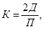
Д - оптимальное количество добавки в сухом состоянии на замес;
П - допускаемая по классу точности абсолютная погрешность дозировки.
После полного растворения добавки определяется плотность раствора и доводится до заданной добавлением воды или добавки.
Следует учитывать изменение плотности в зависимости от температуры.
Пт=П20 - А(Т-20), где (4.2)
П20 - плотность раствора при 20°С г/см3;
А - температурный коэффициент плотности;
Т - температура раствора в момент определения его плотности.
4.4.5. Для повышения эффективности производства работ в зимнее время температура воды должна быть плюс 60 - 70°С, при этом загрузку цемента следует производить после предварительного перемешивания воды и раствора добавки с заполнителем. При одновременном поступлении в автобетоносмеситель составляющих, бетонной смеси вода должна иметь температуру не выше плюс 5°С.
При использовании неподогретой воды способ загрузки материалов в смесительный узел при отрицательных температурах сохраняется таким же, как и при положительных температурах.
4.4.6. Температура бетонной смеси, доставленной на объект при температуре наружного воздуха от минус 5°С до минус КУС и от минус 10°С до минус 15°С, должна быть не ниже плюс 10°С и плюс 15°С соответственно.
При температуре минус 15°С строительство конструкций из литых бетонных смесей не рекомендуется.
4.4.7. В случае неэффективности подогрева воды для получения требуемой температуры смеси следует подогревать заполнители и прежде всего песок.
Температура подогрева заполнителей определяется, исходя из получения заданной температуры бетонной смеси по формуле:
Т прогрева = 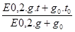
Т прогрева - температура бетонной смеси после перемешивания,°С;
g - количество твердых составляющих бетонной смеси, кг;
g0 - количество раствора противоморозной добавки рабочей консистенции, кг;
t - температура твердения бетонной смеси, °С;
t0 - температура раствора противоморозной добавки рабочей консистенции, °С.
4.4.8. На объекте оптимальное количество суперпластификатора с учетом содержания противоморозной добавки, введенной на заводе, поступает в барабан автобетоносмесителя, где производится дополнительное перемешивание модифицированной смеси в течение 3-5 мин.
4.4.9. Для ускорения процесса твердения бетона при отрицательной температуре допускается снижение количества воды затворения, при этом целесообразно введение на заводе 10-15% (от общего расхода) суперпластификатора. Остальная часть добавки вводится в бетонную смесь на объекте.
4.4.10. Бетонная смесь доставляется на объект в соответствии с графиком поставки с бетонного завода.
На каждую ездку автобетоносмесителя заводом должен выдаваться паспорт, в котором указывается назначение смеси, объем, подвижность при выгрузке, общее количество воды на замес и количество суперпластификатора, необходимое для подачи в смеситель, время перемешивания.
4.5.1. Перед началом работ по устройству покрытий (оснований) из литых бетонных смесей следует проверить:
- готовность подъездов для подачи бетонной смеси к месту укладки;
- наличие готовых температурных швов или металлических и деревянных шаблонов для устройства швов;
- наличие материалов: полиэтиленовой пленки, пергамина и др. для укладки их под литую бетонную смесь, а также для своевременного и бесперебойного ухода за свежеуложенным бетоном во время его твердения при различных температурах (приложение 3);
- наличие инструментов и инвентаря (приложение 4). Рекомендуется использовать набор инструментов и инвентаря, специально разработанных для строительства дорог из литых бетонных смесей фирмой Гольдблат, являющийся отделением американской фирмы Stanley Тооlх (приложение 5).
4.5.2. К началу устройства покрытий (оснований) дорог, тротуаров площадок из литых бетонных смесей следует провести подготовительные работы:
- уложить на песчаный подстилающий слой гидроизоляционный материал (полиэтиленовую пленку, толь, рубероид) внахлест для исключения просачивания цементного молока в нижние слои, а в случае производства работ при отрицательной температуре также и смерзания конструктивных слоев;
- при отсутствии в соответствии с проектом бортовых камней, выполняющих роль опалубки, должна применяться инвентарная металлическая опалубка.
4.5.3. Опалубка должна обеспечить герметичность стыковых соединений. Опалубка должна быть установлена строго по отметкам на участке длиной, обеспечивающей устройство покрытий или оснований в течение смены. При односкатном профиле дороги опалубку устанавливают на всю ширину покрытия (основания), при двухскатном - на половину ширины.
4.5.4. Арматурные сварные сетки, доставленные в рулонах, перед укладкой должны быть нарезаны на отрезки в соответствии с проектом. Арматура должна быть выправлена, очищена от грязи, масел, ржавчины и окалины.
4.5.5. Нарезанные отрезки сетки укладывают через 1,5-2 м на подставки из пластмассы, а также из арматурной стали диаметром 10-12 мм или бетонные подкладки на отметку, предусмотренную проектом.
4.5.6. В местах, предусмотренных проектом, для устройства температурных швов устанавливаются каркасы из металлических корзинок, в которых крепятся штыри для закрепления их в проектном положении; каркасы доставляют на объект в собранном виде.
4.5.7. Транспортирование бетонных смесей следует производить исключительно в автобетоносмесителях, в том числе и оборудованных дозаторами добавок. При отрицательных температурах транспортирование суперпластификатора следует осуществлять во всесезонном дозаторе добавок.
4.5.8. Выгрузка бетонной смеси из автобетоносмесителя в опалубку при имеющейся возможности подъезда непосредственно к строящейся дороге производится равномерно, передвижкой поворотного лотка автобетоносмесителя по всей бетонируемой поверхности. Для облегчения подачи смеси на расстояние 3-4 м следует применять удлиненные лотки или инвентарные приставные лотки, которые должны находиться на объекте.
Во избежание расслоения бетонной смеси угол наклона должен быть в пределах 45-60°.
Автобетоносмеситель при выгрузке литой бетонной смеси следует устанавливать бетономешалкой вниз по естественному уклону дороги.
4.5.9. При отсутствии возможности подъезда автобетоносмесителя непосредственно к строящейся дороге укладку бетонной смеси в труднодоступную конструкцию дорог можно производить автобетоносмесителями совместно с бетононасосами.
4.5.10. В случае, если на строительном объекте имеются участки, продольный уклон которых более 30%о, следует уменьшить подвижность смеси до осадки конуса 10-12 см за счет снижения на 20-30% вводимого на объекте суперпластификатора. Количество вводимого суперпластификатора снижается при использовании также противоморозных добавок.
4.5.11. Уплотнение литой бетонной смеси происходит под действием собственной массы. В местах примыкания смеси к опалубке или к вертикальной поверхности ранее уложенного бетона необходимо незначительное штыкование.
На участках с продольном уклоном более 30%о, где пластичная смесь, допускается легкое виброуплотнение с помощью виброреек или поверхностных вибраторов, а также с помощью специальных валиков фирмы СТЭНЛИ (приложение 5).
4.5.12. После распределения смеси производят ее профилирование с помощью металлического или деревянного шаблона, передвигаемого по опалубке. Обнаруженные после профилировки дефекты поверхности бетона должны быть устранены с помощью инвентарных инструментов: гладилки, кельмы, щетки, валиков. Возможно также использование специального валика для придания покрытию декоративной поверхности (приложение 5).
4.5.13. В бетонных покрытиях скоростных дорог и магистральных улиц предусмотрено устройство швов расширения и сжатия. Расстояния между швами расширения указаны в табл. 8.
4.5.14. Устройство швов в отвердевшем бетоне следует производить при помощи нарезчика швов, разработанного НТЦ "Мосинжстрой" (приложение 6). Швы сжатия нарезают в отвердевшем бетоне шириной 5-6 мм на глубину, равную 1/4-1/3 толщины покрытия. Швы заполняют песчано-цементной или резино-битумной мастикой.
Таблица 8
Расстояние между швами расширения в покрытиях скоростных и магистральных дорог
|
Толщина покрытия, см |
Расстояние между швами расширения в покрытии, м |
||
|
армированного |
неармированного |
||
|
0-5 |
18-20 |
30 |
20 |
|
5-10 |
40 |
30 |
|
|
10-20 |
60 |
40 |
|
|
20 |
80 |
60 |
|
|
0-5 |
21-24 |
50 |
40 |
|
5-10 |
60 |
50 |
|
|
10-20 |
80 |
60 |
|
|
20 |
100 |
80 |
|
Примечание. При расстоянии между швами до 50 м ширина паза в швах должна быть 20 мм, при расстояниях более 50 м- 30 мм.
Расстояние между швами сжатия при ширине покрытия 3,5 и 5,5 м составляет 7 и 5 м соответственно. В основаниях дорог и покрытиях тротуаров и отмосток температурные швы устраивают через 10-12 м.
Температурные швы, нарезаемые в отвердевшем бетоне на всю толщину покрытия, должны иметь ширину 10 мм и заполняются в верхней части на 1/3 резино-битумной мастикой по нижнему слою из сухой цементно-песчаной смеси состава 1:3.
4.5.15. Уход за свежеуложенным бетоном должен быть организован через 30-60 мин после окончания его отделки. На поверхность бетона с помощью автогудронатора ДС-39Б наносят в количестве 0,4-0,7 кг/м2 в два приема пленкообразующие материалы: битумную эмульсию или лак этиноль. Второй слой наносят через 40-60 мин в зависимости от температуры воздуха.
4.5.16. Битумную эмульсию для ухода за свежеуложенным бетоном следует применять при температурах не ниже плюс 5°С. При температуре ниже плюс 15°С следует применять быстрораспадающиеся эмульсии, при температуре выше плюс 15°С - медленнораспадающиеся.
4.5.17. Уход за бетоном нужно осуществлять сразу после его укладки при помощи полиэтиленовой пленки, водонепроницаемой бумаги, пергамина, толя. При выполнении работ в условиях отрицательных температур кроме предложенных материалов, поверх которых укладывают слой сухого песка, грунта, опилок, шлака или снега, используется дорнит.
Теплофизические характеристики этих материалов приведены в приложении 3.
4.5.18. С наступлением теплой погоды весной уложенный зимой бетон поливают до достижения им проектной прочности, но не менее 10-15 дней, считая со времени повышения среднесуточной температуры до 0°С.
4.5.19. Устройство бетонных покрытий и оснований при температурах ниже минус 15°С не рекомендуется.
4.5.20. Эксплуатация покрытия из литой бетонной смеси разрешается через 28 суток.
4.6.1. Приемка выполненных работ подразделяется на:
- приемку законченных конструктивных элементов с составлением актов на скрытые работы с целью определения возможности дальнейшего производства работ;
- приемку законченного бетонного покрытия (основания).
4.6.2. Принимаются следующие конструктивные элементы:
- земляное полотно;
- подстилающий слой;
- покрытие (основание).
4.6.3. Покрытие (основание) принимают после достижения бетоном проектной прочности. Перед приемкой должны быть устранены все мелкие дефекты. При приемке предъявляются результаты: прочностных (предел прочности на сжатие и растяжение) испытаний образцов (кернов); испытаний материалов для приготовления бетонной смеси, состав смеси; акты на скрытые работы; журналы производства работ.
по высотным отметкам ±5 см, по ширине не более 5 см, по толщине покрытия или основания не более 5%, по поперечному уклону в пределах ±5%, по ровности просвет под трехметровой рейкой не должен превышать 5 мм.
5.1. При сооружении бетонных покрытий должен осуществляться систематический контроль за соблюдением требований настоящей инструкции. Контроль возлагается на инженерно-технический персонал и лабораторию фирм, производящих работы.
5.2. При приготовлении и укладке бетонной смеси следует контролировать:
- испытания и качество материалов для бетона;
- проектирование состава бетона;
- правильность хранения материалов на БЗ;
- приготовление бетонной смеси, ее однородность, подвижность и жесткость (на заводе и на объекте);
- соответствие прочности бетона заданной марке;
- транспортирование;
- распределение бетонной смеси, отделку покрытия;
- уход за свежеуложенным бетоном;
- ведение технической отчетности по контролю.
5.3. Все материалы для приготовления бетонной смеси подлежат испытаниям согласно соответствующим нормативным документам ГОСТ и ТУ.
5.4. Подбор состава бетона выполняется лабораторией дорожного строительства НИИМосстроя. Контроль состава бетона с учетом фактической влажности материалов и дозировку материалов на замес ежедневно устанавливает заводская лаборатория.
5.5. Цемент, поступающий на завод, должен храниться в сухих закрытых банках раздельно по маркам и заводам-изготовителям. Песок и щебень должны храниться в штабелях на площадках с усовершенствованным покрытием во избежание загрязнения.
5.6. Приготовлять бетонную смесь разрешается только в исправных бетонных смесителях (или смесителях), снабженных бункерами или дозаторами для песка и щебня в соответствии с принятым фракционированием их, а также емкостями для добавок. Контрольные проверки дозаторов и выхода бетона производят в процессе работ не реже одного раза в месяц.
5.7. Проверяют также последовательность загрузки всех материалов, продолжительность перемешивания, однородность и исходную подвижность (жесткость) бетонной смеси.
5.8. Для контроля подвижности смеси на заводе отбирают пробы в начале, середине и конце выгрузки смеси из бетономешалки.
5.9. Подвижность бетонной смеси на объекте определяют 2-3 раза в смену, а также во всех случаях явного изменения ее подвижности.
5.10. Доставка литой бетонной смеси на объект должна осуществляться при помощи автобетоносмесителей, в том числе оборудованных дозаторами добавок. Исправность дозаторов проверяется не реже одного раза в месяц.
5.11. Температура литой бетонной смеси в период ее укладки при отрицательной температуре контролируется 2-3 раза в смену и не должна быть ниже указанной в п.4.6. настоящей инструкции.
5.12. Контроль прочности бетона состоит в изготовлении контрольных образцов из бетонной смеси и испытания их в установленные сроки в соответствии с ГОСТ 10180-90. Бетон соответствует требованиям, если ни одна из испытанных в возрасте 28 суток партий по прочности на изгиб не будет ниже 95% проектной марки и по прочности на сжатие - не ниже 90% проектной марки.
5.13. Контроль прочности осуществляют на заводе и
непосредственно на месте укладки. Серию контрольных образцов отбирают в каждую
смену на заводе независимо от объема изготовленного и уложенного бетона, если
же в смену выпускается
более 200 м3 смеси - два раза в смену.
Каждая серия контрольных образцов должна состоять из трех кубов размером 20х20х20 см и трех балочек размером 15х15х40 см. Разрешается изготовлять кубы размером 15х15х15 см с введением переходного коэффициента 0,9.
5.14. Для оценки качества бетона помимо испытания контрольных кубов и балочек рекомендуется испытывать высверленные из покрытия цилиндрические образцы диаметром 15 см в количестве 3 штук на каждые 300-400 м.
5.15. Поверхность бетонного покрытия должна быть ровной, без бугров, волн, впадин и не превышать отклонений от проектных размеров, указанных в п.4.6.4.
5.16. Наличие температурных швов и расстояния между ними должны соответствовать проекту или п.п. 4.5.13 и 4.5.14 настоящей инструкции.
5.17. Ежедневно осуществляется контроль как по уходу за свежеуложенным бетоном пленкообразующими материалами при положительных температурах, так и утеплением его при отрицательных температурах твердения.
6.1. При строительстве дорожных конструкций из литых бетонных смесей необходимо строго соблюдать технические правила производства работ в соответствии с требованиями норм и правил техники безопасности СНиП III-4-80 "Техника безопасности в строительстве".
6.2. К работе по устройству конструкций из литых смесей должны допускаться люди не моложе 18 лет, прошедшие медицинский осмотр, обученные по утвержденной программе безопасным методам работы, получившие удостоверение о сдаче экзаменов и проинструктированные непосредственно на рабочем месте. Проверка знаний рабочих производится ежегодно специальной комиссией.
6.3. Руководитель строительной организации обязан обеспечить ежегодную проверку знаний инженерно-техническими работниками правил техники безопасности и при неудовлетворительных знаниях не допускать их к руководству работами.
6.4. Все подготовительные и механизированные работы должны производиться под непосредственным руководством инженерно-технических работников, назначенных приказом.
6.5. На строительных объектах должны быть оборудованы санитарно-бытовые помещения в соответствии с СН 243-63 и постановлением Министерства здравоохранения.
6.6. Строительные объекты должны быть обеспечены аптечками с медикаментами и средствами для оказания первой помощи, питьевой (кипяченой или газированной) водой.
6.7. Рабочие должны быть обеспечены специальной одеждой и исправным ручным инструментом в соответствии с действующими нормами.
6.8. Работы на сильном морозе, при ветре со скоростью до 15 м/с и более, при метелях, туманах, снегопадах и др. должны выполняться в соответствии с решением исполкома Моссовета и МГК профсоюза от 26.10.87 г. № 2562.
6.9. Рабочую зону необходимо оградить: поперек дороги с обеих сторон устанавливают сплошные штакетные ограждения, вдоль дороги - столбовые ограждения с канатом.
6.10. На расстоянии 15 м от ограждения навстречу движению транспорта должны быть выставлены в соответствии с требованиями ГОСТ 12.4.025-76 дорожные знаки "Въезд запрещен", "Движение только направо" или "Движение только налево".
6.11. С наступлением темноты в зоне работ в соответствии с требованиями ГОСТ 12.1.047-85 должны быть установлены сигнальные лампы красного цвета. Лампы мощностью до 200 Вт подвешивают на высоте 2,5-3 м, а более 200 Вт - на высоте 3,5-10 м.
6.12. При доставке смеси автобетоносмесителями необходимо соблюдать следующие правила:
- при их движении по обочине все рабочие должны находиться на противоположной обочине;
- не разрешается подходить к ним до полной их остановки;
- при движении бетоносмесителей (особенно задним ходом) рабочий, находящийся в безопасной зоне, должен подавать шоферу сигналы.
6.13. Суперпластификаторы не выделяют при хранении вредных паров и газов, малотоксичны, водные растворы их пожаробезопасны. При нагреве суперпластификаторов выделяются пары, которые действуют раздражающе на слизистые оболочки глаз, органы дыхания, пищеварения и незащищенную кожу, что вызывает необходимость применять индивидуальные средства защиты (защитные очки закрытого типа, сапоги, резиновые перчатки и др.).
6.14. Для складов нитрата кальция должны выполняться требования "Правил безопасности для неорганических производств азотной промышленности" ГГТН и Минхимпрома.
Кристаллический нитрит натрия пожароопасен, так как способен поддерживать огонь и вызывает воспламенение горючих веществ, в отдельных случаях - от трения или удара. Для предотвращения пожара на складе запрещается курение и применение открытого огня, следует исключить возможность коротких замыканий и искрений в электрооборудовании и электропроводке. Склад должен быть обеспечен противопожарным водопроводом и необходимыми противопожарными средствами.
6.15. Не допускается попадание противоморозных добавок на кожу и продукты питания.
Емкость перед заполнением растворами противоморозных добавок необходимо тщательно промыть водой, а если в них ранее хранились кислоты и другие продукты, имеющие кислую реакцию, предварительно пропарить.
7.1. Необходимо осуществлять мероприятия и работы по охране окружающей природной среды согласно СНиП 3.01.01-85 "Организация строительного производства".
7.2. При строительстве должна быть обеспечена сохранность зеленых насаждений.
7.3. Слив воды от промывки автобетоносмесителей производить в места, предусмотренные в ППР.
7.4. Территория стройплощадки после окончания работ по устройству дороги должна быть очищена от строительного мусора и спланирована по проектным отметкам.
|
Типы улиц и дорог |
Основное назначение |
|
Скоростные дороги |
Скоростная транспортная связь удаленных населенных пунктов между собой, с крупными промышленными районами и автомобильными дорогами общей сети. Развязка движений в разных уровнях и обеспечение непрерывности движения транспорта |
|
Магистральные улицы: общегородского значения |
Транспортная связь между жилыми, промышленными, складскими районами, а также с центром населенного пункта, объектами общегородского значения (вокзал, парк, стадион и др.), скоростными магистралями и автомобильными дорогами общей сети. Развязка движения в одном или разных уровнях |
|
районного значения |
Местная транспортная связь в пределах жилых и промышленных районов, транспортная связь жилых и промышленных районов с магистральными улицами общегородского значения и скоростными дорогами |
|
Улицы и дороги местного значения: жилых районов |
Транспортная и пешеходная связь отдельных групп зданий и микрорайонов с магистральными улицами. |
|
промышленных и складских районов |
Транспортная и пешеходная связь отдельных промышленных предприятий и складов с магистральными улицами |
|
проезды |
Транспортная и пешеходная связь внутри микрорайонов с улицами местного движения; подъезды к отдельным объектам промышленных районов |
|
Концентрация
раствора, |
Плотность
раствора, |
Содержание сухого вещества, г/л |
Теплоемкость, |
|
0 |
0,998 |
0 |
4,2 |
|
2 |
1,008 |
20,2 |
4,150 |
|
5 |
1,023 |
51,2 |
4,074 |
|
7 |
1,033 |
72,3 |
4,024 |
|
10 |
1,049 |
104,9 |
3,948 |
|
12 |
1,059 |
127,0 |
3,898 |
|
15 |
1,074 |
161,1 |
3,822 |
|
20 |
1,099 |
219,8 |
3,696 |
|
25 |
1,125 |
281,1 |
3,570 |
|
30 |
1,150 |
344,9 |
3,444 |
|
33 |
1,165 |
384,4 |
3,368 |
|
35 |
1,175 |
411,3 |
3,318 |
|
37 |
1,185 |
438,5 |
3,268 |
|
40 |
1,200 |
480,2 |
3,192 |
|
Материал |
Объемная масса, т/м3 |
Коэффициент теплопроводности, Вт/м°с |
Удельная теплоемкость, кДж/кг×°С |
|
Шлак |
600 |
0,29 |
- |
|
Шлак |
800 |
0,34 |
- |
|
Вата минеральная |
100 |
0,049 |
0,76 |
|
Вата минеральная |
150 |
0,055 |
0,76 |
|
Опилки |
250 |
0,26 |
- |
|
Оргалит |
300 |
0,16 |
- |
|
Пенопласт плитный |
74 |
0,043 |
1,34 |
|
100 |
0,043 |
1,34 |
|
|
200 |
0,043 |
1,34 |
|
|
Рубероид, пергамин, толь |
600 |
0,17 |
1,47 |
|
Снег рыхлый, сухой |
300 |
- |
2,1 |
|
Лед |
900 |
- |
2,1 |
|
№ пп |
Наименование |
Единица измерения |
Количество |
|
Инвентарь |
|||
|
1. |
Передвижной фургон |
шт. |
1 |
|
2. |
Мешковина |
м2 |
300 |
|
3. |
Вибратор площадочный |
шт |
2 |
|
4. |
Толь или битуминизированая бумага |
м2 |
150 |
|
5. |
Металлический шаблон |
шт |
1 |
|
6. |
Передвижная машина для нанесения битумной эмульсии |
" |
2 |
|
7. |
Деревянная прокладка |
" |
1 на 7 пог.м |
|
8. |
Аптечка |
" |
1 |
|
9. |
Бачок для воды |
" |
2 |
|
10. |
Кружка эмалированная |
" |
30 |
|
11. |
Огнетушитель |
" |
2 |
|
12. |
Ограждение деревянное |
" |
10 |
|
13. |
Веревка для ограждения |
пог.м |
500 |
|
14. |
Чайник эмалированный |
шт. |
1 |
|
15. |
Переносной светильник |
" |
6 |
|
Инструмент |
|||
|
1. |
Рейка 3-метровые (дюралюминиевые) |
шт. |
2 |
|
2. |
Лопаты совковые с ручками |
" |
5 |
|
3. |
Лопаты штыковые с ручками |
" |
10 |
|
4. |
Ломы |
" |
3 |
|
5. |
Визирки дюралюминиевые |
компл. |
2 |
|
6. |
Рулетки тесмяные 1-метровые |
шт |
2 |
|
7. |
Уровни дюралюминиевые |
" |
2 |
|
8. |
Метры металлические |
" |
2 |
|
9. |
Рейбовки |
" |
5 |
|
10. |
Капроновые щетки размером 700х80х3500 мм |
" |
4 |
|
11. |
Полутерки |
" |
3 |
|
12. |
Кельмы |
" |
3 |
|
13. |
Щетки волосяные |
" |
2 |
|
14. |
Приспособление для разделки швов |
" |
5 |
|
15. |
Ведра |
" |
3 |
|
16. |
Светильники |
" |
4 |
|
17. |
Нивелир |
" |
1 |
|
18. |
Штатив для геодезических инструментов |
" |
1 |
|
19. |
Рейка нивелирная |
" |
1 |
|
20. |
Кувалда кузнечная тупоносая |
" |
2 |
|
21. |
Молоток плотничный |
" |
2 |
|
22. |
Топор плотничный |
" |
2 |
|
23. |
Пила-ножовка |
" |
2 |
|
24. |
Скребок для очистки опалубки |
" |
2 |
|
25. |
Шнур трассировочный |
м |
20 |
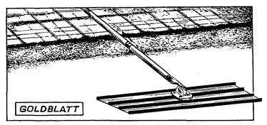
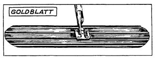
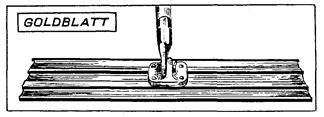
Разравнивание литой бетонной смеси при помощи различной формы гладилок
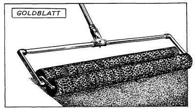
Разравнивание и уплотнение малоподвижной и подвижной бетонной смеси валиками
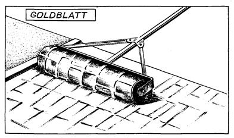
Нанесение рисунка на свежеуложенную бетонную смесь при помощи валика
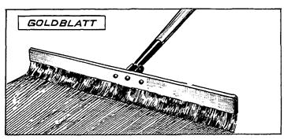
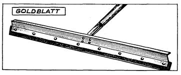
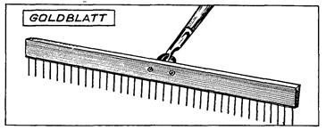
Инструменты для обработки поверхности из свежеуложенного бетона с волосяной щеткой, резиновой насадкой и приспособлением для создания текстуры поверхности
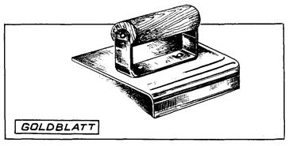
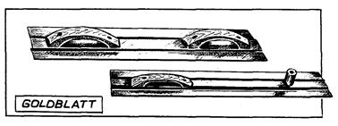
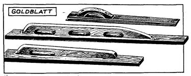
Инструменты для обработки и контроля качества поверхности свежеуложенного бетона: угловая затирка для создания ровных кромок швов; затирка и уровни
СОДЕРЖАНИЕ